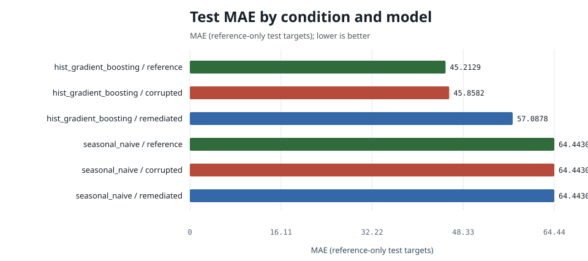
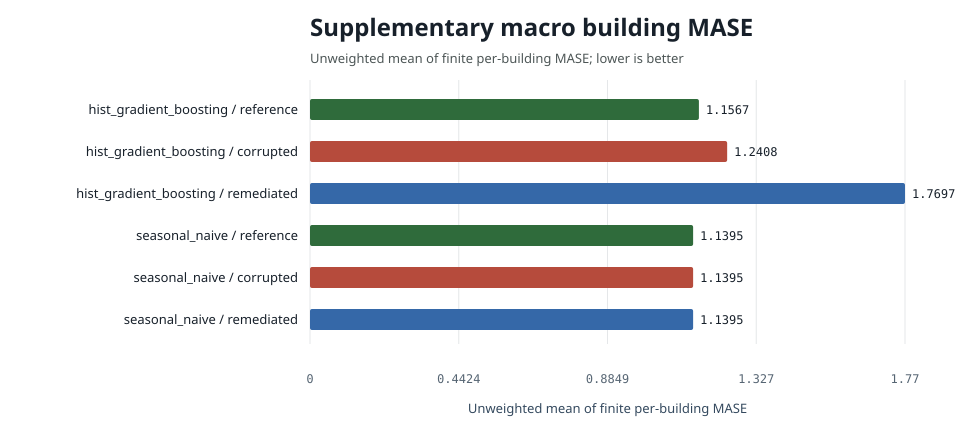

| condition | model | n | mae | rmse | wmape | mase | r2 | mae_ci_low | mae_ci_high | mase_macro_building | mase_buildings_evaluated | mase_buildings_undefined | training_rows | data_retained |
|---|---|---|---|---|---|---|---|---|---|---|---|---|---|---|
| corrupted | hist_gradient_boosting | 79178 | 45.8582 | 138.2894 | 0.1078 | 0.7403 | 0.9491 | 44.8897 | 46.8056 | 1.2408 | 12 | 0 | 105399 | 0.9999 |
| reference | hist_gradient_boosting | 79178 | 45.2129 | 134.0276 | 0.1063 | 0.7299 | 0.9522 | 44.2645 | 46.1472 | 1.1567 | 12 | 0 | 105400 | 0.9999 |
| remediated | hist_gradient_boosting | 79178 | 57.0878 | 142.0589 | 0.1342 | 0.9216 | 0.9463 | 56.1768 | 57.9918 | 1.7697 | 12 | 0 | 83375 | 0.7910 |
| corrupted | seasonal_naive | 79178 | 64.4430 | 210.7660 | 0.1515 | 1.0404 | 0.8817 | 63.0987 | 65.8824 | 1.1395 | 12 | 0 | 105399 | 0.9999 |
| reference | seasonal_naive | 79178 | 64.4430 | 210.7660 | 0.1515 | 1.0404 | 0.8817 | 63.0987 | 65.8824 | 1.1395 | 12 | 0 | 105400 | 0.9999 |
| remediated | seasonal_naive | 79178 | 64.4430 | 210.7660 | 0.1515 | 1.0404 | 0.8817 | 63.0987 | 65.8824 | 1.1395 | 12 | 0 | 83375 | 0.7910 |
mase remains the canonical pooled MASE-168 primary metric.
mase_macro_building is supplementary and averages finite
building-specific MASE values whose denominators come only from reference
training history. Coverage is retained explicitly in the table and
building_mase.csv.


The signed difference is remediated absolute error minus corrupted absolute error on identical test keys. Negative values favor remediation.
| model | n | corrupted_mae | remediated_mae | mean_difference | difference_ci_low | difference_ci_high |
|---|---|---|---|---|---|---|
| hist_gradient_boosting | 79178 | 45.8582 | 57.0878 | 11.2296 | 10.8469 | 11.5926 |
| seasonal_naive | 79178 | 64.4430 | 64.4430 | 0.0000 | 0.0000 | 0.0000 |
Subgroup results cover site, primary use, building, and calendar quarter. They are robustness slices, not a fairness assessment.
The table includes every configured condition and model. Lower error is better. Causal interpretation is limited to the documented seeded fault suite and deterministic remediation. Natural source-data comparisons remain observational.